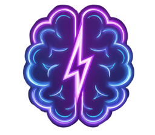

BeforeAfter
The revision brain dump
One messy note
Chapter 7 needs a complete rewrite. The pacing is off after the reveal in chapter 5. Sarah's motivation doesn't connect to chapter 12 anymore. I have notes in my Google Doc but I also wrote something on my phone about the timeline. The beta reader said the middle drags. I think I need to move the confrontation earlier but that breaks the subplot with Marcus. Also I changed the warehouse scene and need to check if it contradicts chapters 3 and 4.
Unstructured context · no cleanup first
BuildOS structures the project

Project updated
Novel Revision Project
Goal created
Complete novel revision — pacing, motivation, and plot consistency
Task created
Rewrite Chapter 7
Task Kanban Board

BuildOS